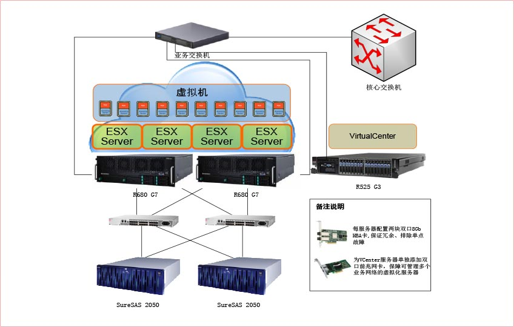
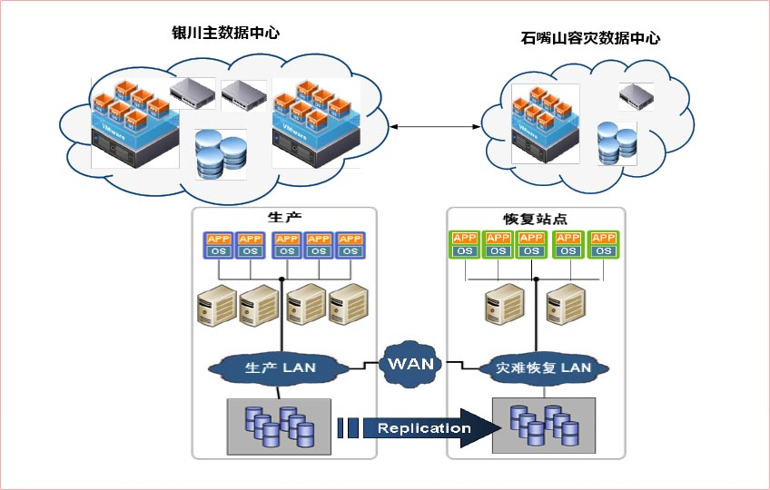
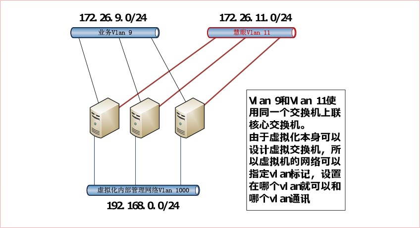
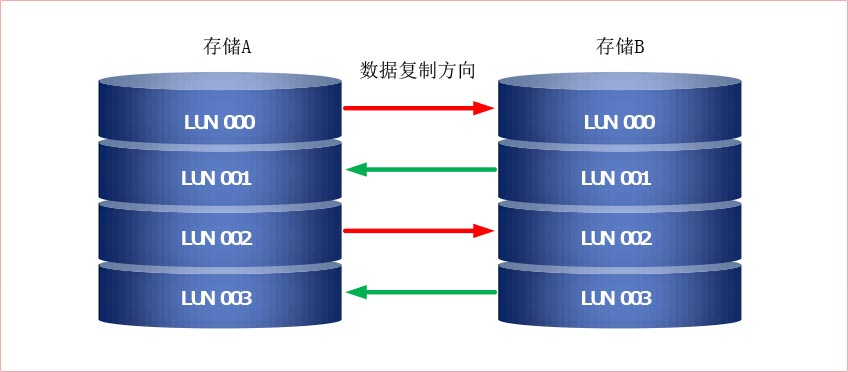

石嘴山银行的前身是石嘴山城市信用社。2001年该信用社合并重组以来，在服务地方经济建设中实现了业务发展与经营效益的历史性突破。2008年末，信用社资产总额达到65亿元，累计发放贷款112亿元，利润达1.18亿元，缴纳税金4200万元，成长为全市人均纳税首位的企业。各项经营指标在石嘴山银行业金融机构中均排名第一。2008年12月12日，中国银行业监督管理委员会正式批复组建石嘴山银行。
石嘴山银行未来三年区域发展目标是“立足石嘴山，拓展银川市，辐射全宁夏”。石嘴山银行以审慎经营和稳健发展为原则，以全面风险控制为基础，以金融产品、金融服务创新为重点，以“支持地方经济、面向中小企业、服务城乡居民”为市场定位，全力建设“具有品牌特色的国内一流银行”。
银行业务发展的需求(立足石嘴山，拓展银川市，辐射全宁夏) ，现有的IT系统都是集中放置在石嘴山机房，如果银行业务拓展到了别的城市，会导致现有IT系统不能够支持其他分支银行的业务。石嘴山银行要完成三年的发展目标，IT系统的建设必须超前于银行业务的发展。
现有的业务，和人民银行对接的系统使用的是SCO Unix操作系统，而最新版本的系统也已经是十年前发布的系统，此软件的供应商已经停止了此系统的更新，导致很难找到能够运行此系统的服务器。
银行正处在一个高速发展时期，很多业务系统都是在开发和完善当中，开发人员需求开发、测试、版本迭代、版本管理等服务器，而且针对不同的业务系统，需要快速的获取服务器资源。
银行的系统对安全性、可用度要求很高，所有的系统必须有备份的系统和数据容灾的中心（银监局的要求）。
按照客户的需求，以及方案的研讨过程中达成的共识，联想综合了银行的业务需求及技术需求，为银行定制了一整套虚拟化云数据中心的解决方案，方案需要分三期建设。
第一期，在石嘴山现有数据中心，实现服务器虚拟化，将业务系统逐步迁移到虚拟化平台。
第二期，银川主数据中心落成后，建立同样的云数据中心，将石嘴山数据中心的业务平台逐步切换过渡到银川主数据中心，将石嘴山数据中心作为灾备的数据中心。
第三期，灾备系统的落地，统一云管理平台的定制（Paas Saas平台的建设）
目前第一期为银行设计的虚拟化架构如下图所示
客户分步骤将业务平台上线或转移至虚拟服务器平台上，步骤如下：
未来第二、三期设想图如下：
以此架构，为银行在银川的业务网点提供服务，网点的业务终端业务系统也逐步切换至桌面云计算解决方案。
规划出了3个独立的网络，分别是业务网络、虚拟机管理网络、硬件管理网络（慧眼网络）
如上图所示，实际上仅使用了一个网络交换机就可以实现。vSphere支持添加虚拟交换机，而且可以指定Vlan编号，当创建的虚拟服务器在特定的网段时，仅需要将vlan编号更改成指定网段的vlan编号即可通讯。要实现这样的连接方式，在交换机上需要做相应的配置，将交换机的上联接口需要配置成trunk模式,trunk模式即中继模式，可以转发各个vlan的数据包，所以才能实现和各个vlan的通讯。
配置慧眼vlan的主要目的是，帮助银行实现机房远程管理功能，通过慧眼的功能，使得可以有效避免各种人员调试都进入数据中心，方便了数据中心管控，增加了数据的安全性。
在两台存储上分别划分四个大小相等的LUN,启用存储的TureCopy技术，实现以下复制方式
这样的设计及保障数据安全，又保障的存储带宽以及业务可用的IOPS值，两台存储都可用。